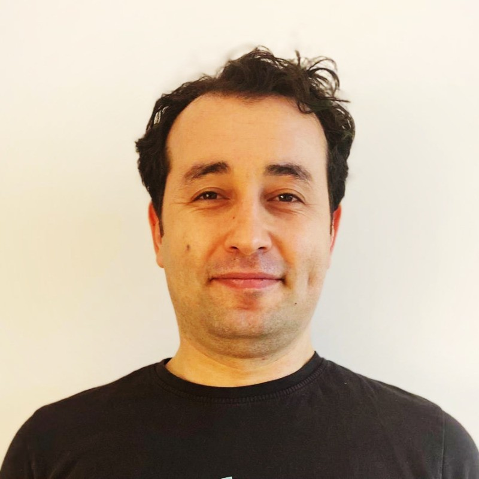

Sep 2025 — Present
Staff Machine Learning Engineer at Getir
Leading R&D and technical direction for machine-learning work in routing, map services, and delivery operations.
Machine Learning Engineer · Applied Scientist · Data Scientist

I build machine-learning systems for real-world operations, with experience in routing, geospatial data, forecasting, and computer vision.
Sep 2025 — Present
Staff Machine Learning Engineer at Getir
Leading R&D and technical direction for machine-learning work in routing, map services, and delivery operations.
Sep 2023 — Aug 2025
Lead Machine Learning Engineer at Getir
Led applied ML initiatives spanning ETA prediction, demand forecasting, fraud detection, driving-risk scoring, and spatial data systems.
Feb 2022 — Sep 2023
Senior Data Scientist at Getir
Led data science work for Getir Drive, including vehicle telemetry analysis, map matching, and production data pipelines.
Aug 2020 — Feb 2022
Lead Data Scientist at HERE Technologies
Delivered internal analytics and dashboards, and advised engineering teams on efficient data-pipeline design.
May 2018 — Aug 2020
Senior Product Analyst at HERE Technologies
Managed map-content roadmaps across Turkey, North Africa, and Pakistan, supporting geospatial customers and API users.
Aug 2016 — May 2018
Project Lead at HERE Technologies
Managed GPS-based road-network update projects across the Middle East and built map-matching workflows.
Jan 2015 — Aug 2016
Team Lead at HERE Technologies
Supervised GIS teams and developed geospatial infrastructure for POI and road-network updates.
Mar 2013 — Apr 2014
Site Research Statistics Analyst at Tesco Kipa
Analyzed retail performance and produced geospatial customer-segmentation reporting.
Jul 2011 — Mar 2013
Mapping & Field Project Specialist at Sampaş
Performed field data collection and QA/QC for smart-city projects.
Ph.D. in Geomatics Engineering · Istanbul Technical University
2017 — 2024 · Istanbul, Turkey
Thesis: Applied Deep Learning and Computer Vision in Multi-modal Earth Observation Data
M.Sc. in Geomatics Engineering · Istanbul Technical University
2007 — 2010 · Istanbul, Turkey
Thesis: Statistical Analysis of Engineering Surveys
B.Sc. in Geodesy and Photogrammetry Engineering · Istanbul Technical University
2003 — 2007 · Istanbul, Turkey
Thesis: Numerical Analysis and Design of Road Alignments
Mapping Antarctica through text and location-based social media analysis
AI Powered Road Network Prediction with Fused Low-Resolution Satellite Imagery and GPS Trajectory
Performance Evaluation of GPS Trajectory Rasterization Methods
Review Of Public Tweets Over Turkey Within A Pre-Determined Time